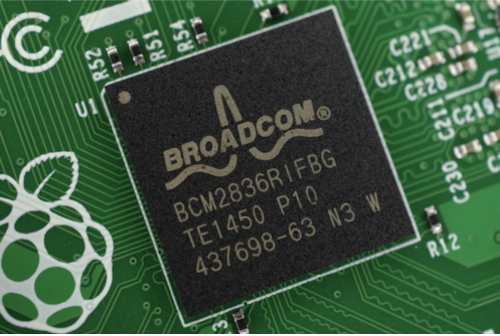

Hardware
De Raspberry Pi is ontworpen als een budgetvriendelijke computer. Inmiddels zijn er zowel krachtige varianten ontwikkeld voor geavanceerde toepassingen als modellen die nog steeds zeer betaalbaar zijn, zodat ze aantrekkelijk blijven voor een breed publiek.

Processor en system—on—chip (SoC)
Door de verschillende Raspberry Pi—modellen heen zijn er diverse system—on—chip—ontwerpen gebruikt. Met elke nieuwe versie kwamen verbeteringen in CPU—architectuur, kloksnelheid, grafische prestaties en de algehele verwerkingssnelheid. Sommige SoC—ontwerpen zijn geproduceerd door Arm of Broadcom (zoals de BCM2835 op de originele Raspberry Pi), terwijl andere buiten de samenwerking met Broadcom zijn ontwikkeld. Het nieuwste Raspberry Pi—model, de Raspberry Pi 5, bevat de Broadcom BCM2712 quad—core ARM Cortex—A76—processor met 2,4 GHz. Dit maakt het model tot drie keer sneller dan eerdere Raspberry Pi—versies.
RAM
Het eerste model, de originele Raspberry Pi Model A, was uitgerust met 256 MB RAM, terwijl de Model B beschikte over 512 MB. Alle Raspberry Pi—borden delen het geheugen tussen de CPU en GPU en ondersteunen dynamische geheugenverdeling. De nieuwste Raspberry Pi 5 heeft RAM—varianten tot wel 16 GB, wat zorgt voor de snelste en meest soepele prestaties tot nu toe.
Video
De Raspberry Pi ondersteunt zowel digitale als analoge video—uitvoer, met een breed scala aan resoluties. Naarmate nieuwere modellen zijn uitgebracht, zijn de connectoren verkleind om ruimte te maken voor extra functies, zoals het gebruik van mini—HDMI en micro—HDMI—aansluitingen. Oudere Raspberry Pi—modellen ondersteunden doorgaans resoluties van 720p tot ongeveer 1080p. Het nieuwste model, de Raspberry Pi 5, kan echter twee 4K—schermen op 60 Hz aansturen.